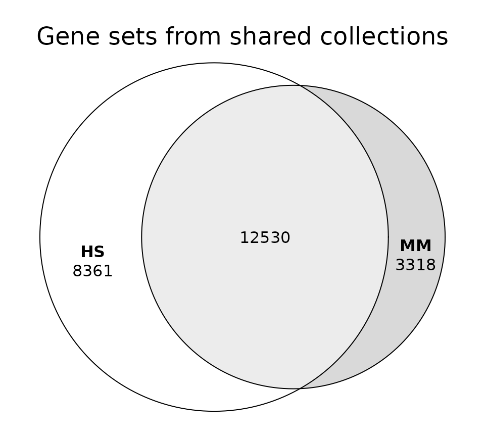
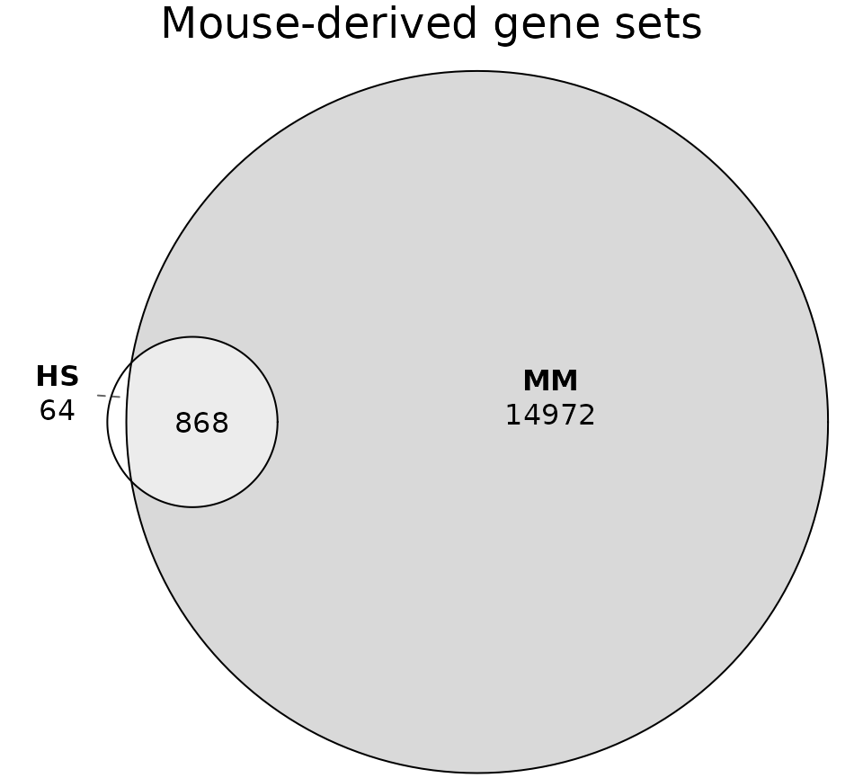
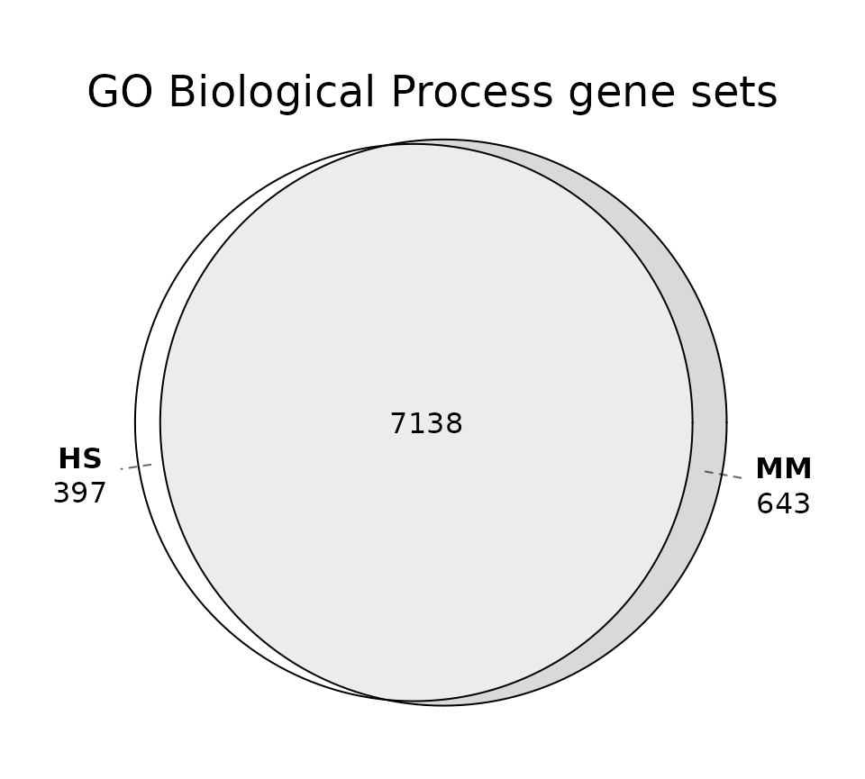
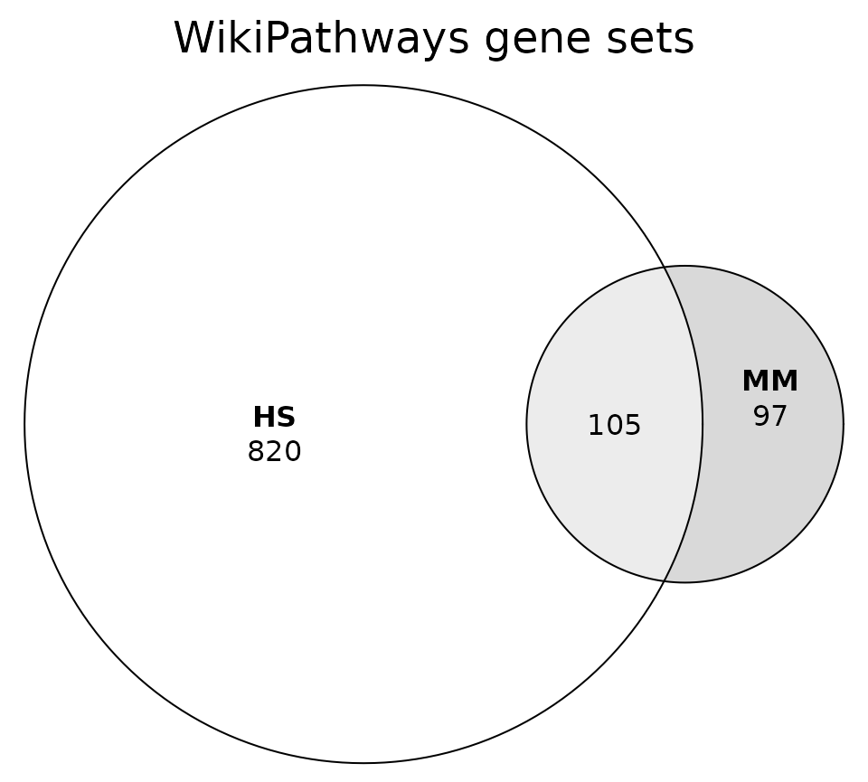
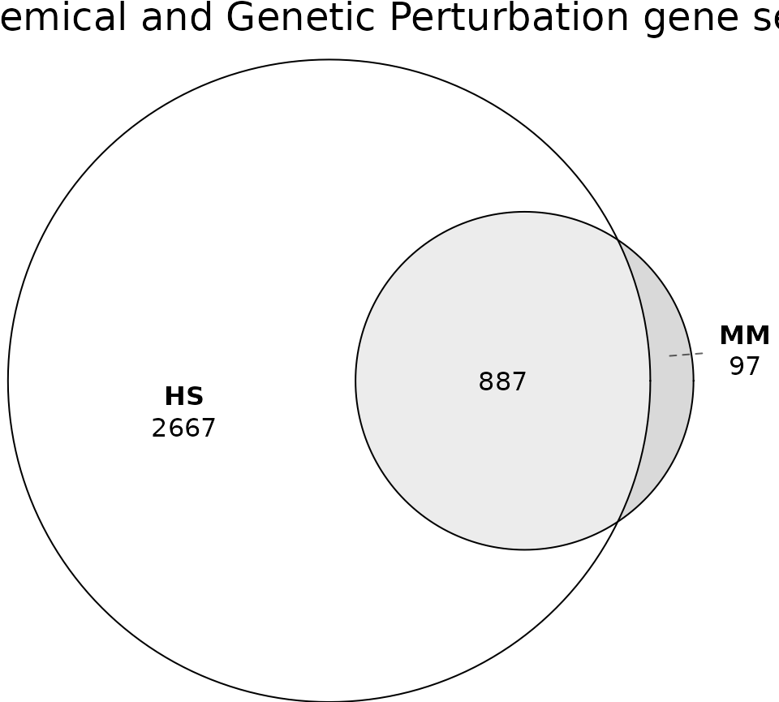
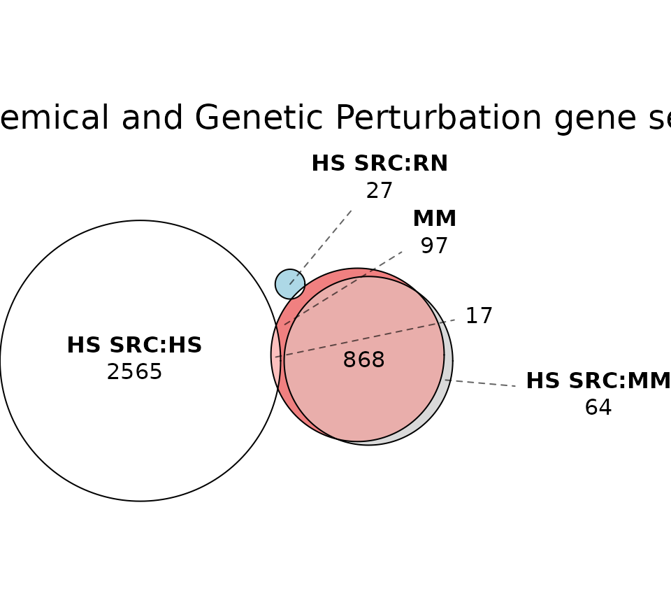
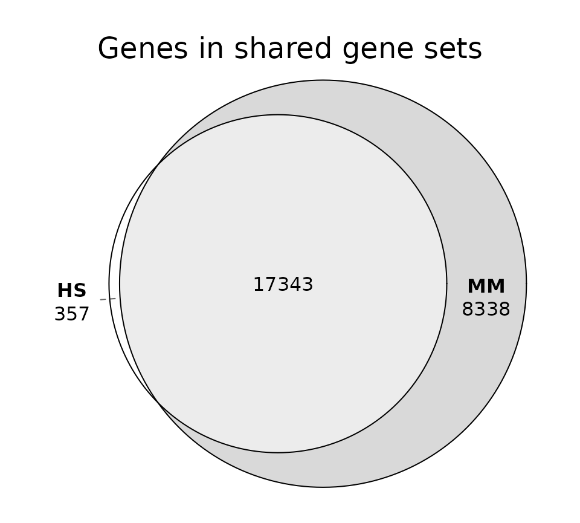
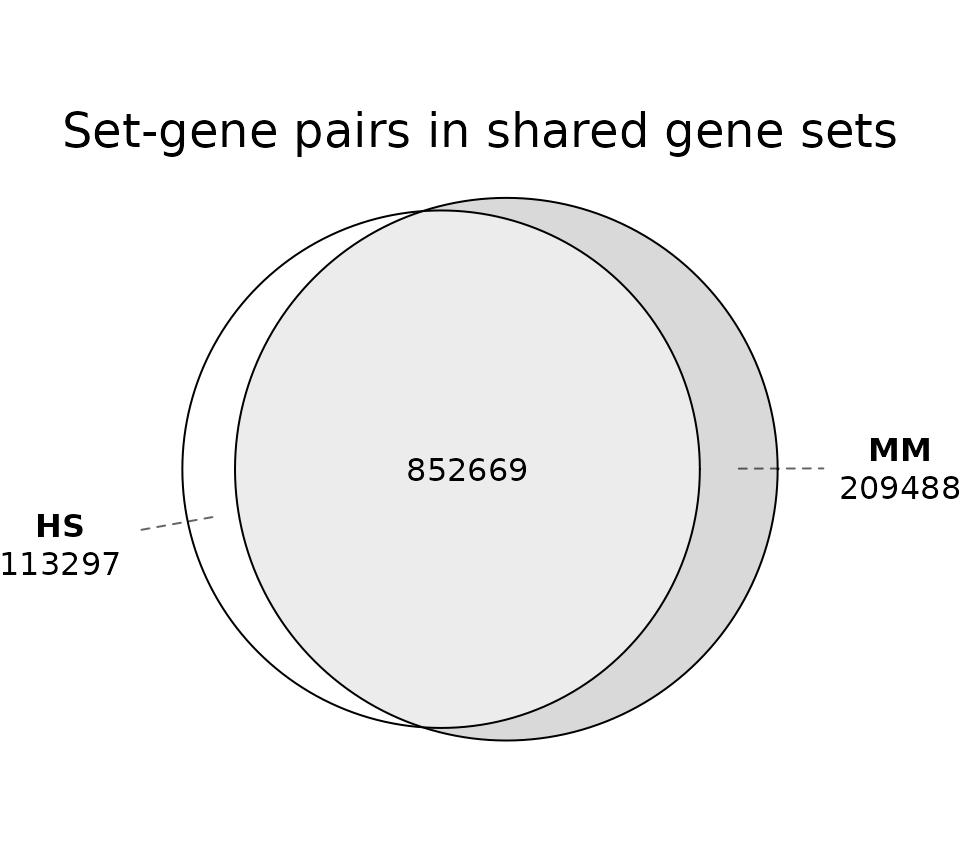
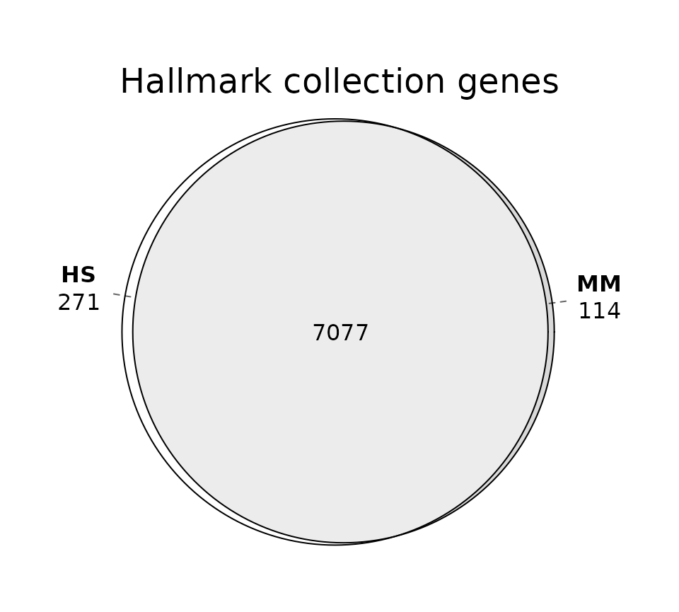
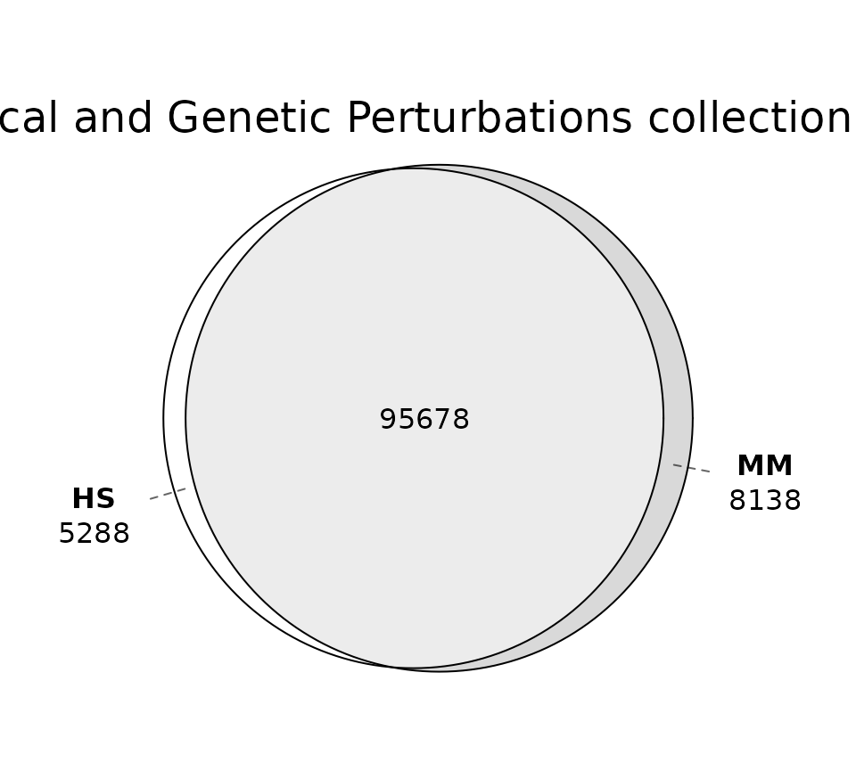

Introduction
The MSigDB resource has historically been tailored to the analysis of human-specific datasets, with gene sets exclusively aligned to the human genome. One of the initial goals of msigdbr was to simplify conversion of those human gene sets to other species, most notably mouse.
Recent versions of MSigDB are split into human and mouse datasets. As described in the initial release notes:
MSigDB is now split into two major divisions; a series of gene set collections that are provided in the namespace of human gene symbols, and a series of gene set collections that are provided in the namespace of mouse gene symbols. As such the versioning convention of MSigDB has changed to adopt the format Year.Release.Species.
The corresponding publication (Castanza et al, 2023) provided additional context:
While ortholog mapping is useful, some degree of uncertainty exists when discriminating between orthologs and paralogs, and even orthologous genes in human and mouse can have different functions. The inclusion of all genes — that is, not excluding species-specific genes — may be key to gaining mechanistic insights and understanding species-specific biology. Therefore, we invested substantial effort to support analysis of mouse data through the release of Mouse MSigDB, which consists of gene sets curated directly from mouse-centric databases and datasets and specified in native mouse gene identifiers. These sets can be used without the need for ortholog mapping. … By offering both support for native analysis of mouse data and support for mapping mouse data to use with human gene sets and human data to use with mouse-native sets, the new MSigDB enhancements represent a significant step forward in the potential translational impact of GSEA results and put the enrichment analysis of mouse and human data on equal footing.
The goal of this vignette is to compare the human and mouse databases to better understand their similarities and differences.
Load data
Load the relevant packages.
Retrieve human and mouse databases. Use mouse orthologs for the human database to make the genes comparable.
hs <- msigdbr(db_species = "hs", species = "mouse")
mm <- msigdbr(db_species = "mm", species = "mouse")All the results below are specific to this release of MSigDB.
Remove the positional gene sets that correspond to chromosome cytogenetic bands. Including those in any comparisons would not be meaningful.
hs <- filter(hs, gs_collection_name != "Positional")
mm <- filter(mm, gs_collection_name != "Positional")Generate a collections data frame (ignore genes and gene sets).
collections_hs <- distinct(hs, gs_collection, gs_subcollection, gs_collection_name)
collections_mm <- distinct(mm, gs_collection, gs_subcollection, gs_collection_name)Generate a gene sets data frame (ignore genes).
Collections
Check how many collections are present in each database.
message("Number of HS collections: ", nrow(collections_hs))
#> Number of HS collections: 25
message("Number of MM collections: ", nrow(collections_mm))
#> Number of MM collections: 13The human database includes more collections than the mouse database.
Check which collections are present in each database.
arrange(collections_hs, gs_collection, gs_subcollection)
#> # A tibble: 25 × 3
#> gs_collection gs_subcollection gs_collection_name
#> <chr> <chr> <chr>
#> 1 C2 "CGP" "Chemical and Genetic Perturbations"
#> 2 C2 "CP" "Canonical Pathways"
#> 3 C2 "CP:BIOCARTA" "BioCarta Pathways"
#> 4 C2 "CP:KEGG_LEGACY" "KEGG Legacy Pathways"
#> 5 C2 "CP:KEGG_MEDICUS" "KEGG Medicus Pathways"
#> 6 C2 "CP:PID" "PID Pathways"
#> 7 C2 "CP:REACTOME" "Reactome Pathways"
#> 8 C2 "CP:WIKIPATHWAYS" "WikiPathways"
#> 9 C3 "MIR:MIRDB" "miRDB"
#> 10 C3 "MIR:MIR_LEGACY" "MIR_Legacy"
#> 11 C3 "TFT:GTRD" "GTRD"
#> 12 C3 "TFT:TFT_LEGACY" "TFT_Legacy"
#> 13 C4 "3CA" "Curated Cancer Cell Atlas gene sets "
#> 14 C4 "CGN" "Cancer Gene Neighborhoods"
#> 15 C4 "CM" "Cancer Modules"
#> 16 C5 "GO:BP" "GO Biological Process"
#> 17 C5 "GO:CC" "GO Cellular Component"
#> 18 C5 "GO:MF" "GO Molecular Function"
#> 19 C5 "HPO" "Human Phenotype Ontology"
#> 20 C6 "" "Oncogenic Signature"
#> 21 C7 "IMMUNESIGDB" "ImmuneSigDB"
#> 22 C7 "VAX" "HIPC Vaccine Response"
#> 23 C8 "" "Cell Type Signature"
#> 24 C9 "" "Computational Perturbation Signature"
#> 25 H "" "Hallmark"
arrange(collections_mm, gs_collection, gs_subcollection)
#> # A tibble: 13 × 3
#> gs_collection gs_subcollection gs_collection_name
#> <chr> <chr> <chr>
#> 1 M2 "CGP" Chemical and Genetic Perturbations
#> 2 M2 "CP:BIOCARTA" BioCarta Pathways
#> 3 M2 "CP:REACTOME" Reactome Pathways
#> 4 M2 "CP:WIKIPATHWAYS" WikiPathways
#> 5 M3 "GTRD" GTRD
#> 6 M3 "MIRDB" miRDB
#> 7 M5 "GO:BP" GO Biological Process
#> 8 M5 "GO:CC" GO Cellular Component
#> 9 M5 "GO:MF" GO Molecular Function
#> 10 M5 "MPT" MP Tumor
#> 11 M7 "" Immunologic Signature
#> 12 M8 "" Cell Type Signature
#> 13 MH "" HallmarkCheck shared collections (matched by name).
sort(intersect(collections_hs$gs_collection_name, collections_mm$gs_collection_name))
#> [1] "BioCarta Pathways" "Cell Type Signature"
#> [3] "Chemical and Genetic Perturbations" "GO Biological Process"
#> [5] "GO Cellular Component" "GO Molecular Function"
#> [7] "GTRD" "Hallmark"
#> [9] "miRDB" "Reactome Pathways"
#> [11] "WikiPathways"Check human-only collections.
sort(setdiff(collections_hs$gs_collection_name, collections_mm$gs_collection_name))
#> [1] "Cancer Gene Neighborhoods"
#> [2] "Cancer Modules"
#> [3] "Canonical Pathways"
#> [4] "Computational Perturbation Signature"
#> [5] "Curated Cancer Cell Atlas gene sets "
#> [6] "HIPC Vaccine Response"
#> [7] "Human Phenotype Ontology"
#> [8] "ImmuneSigDB"
#> [9] "KEGG Legacy Pathways"
#> [10] "KEGG Medicus Pathways"
#> [11] "MIR_Legacy"
#> [12] "Oncogenic Signature"
#> [13] "PID Pathways"
#> [14] "TFT_Legacy"Check mouse-only collections.
sort(setdiff(collections_mm$gs_collection_name, collections_hs$gs_collection_name))
#> [1] "Immunologic Signature" "MP Tumor"The mouse database is not a simple translation of the human one. Many collections are shared, but there are also unique ones in each database.
Source species
While each database is targeted at a particular species, the gene sets may have originated from a different species.
count(genesets_hs, gs_source_species, sort = TRUE)
#> # A tibble: 5 × 2
#> gs_source_species n
#> <chr> <int>
#> 1 HS 31048
#> 2 MM 3959
#> 3 RN 31
#> 4 RM 6
#> 5 DR 5
count(genesets_mm, gs_source_species, sort = TRUE)
#> # A tibble: 3 × 2
#> gs_source_species n
#> <chr> <int>
#> 1 MM 16719
#> 2 HS 6
#> 3 RN 2Not all human gene sets are based on human experiments. Nearly all mouse gene sets are based on mouse experiments. As stated in the original publication, the mouse database “consists of gene sets curated directly from mouse-centric databases and datasets and specified in native mouse gene identifiers”.
The source species may be misleading. Gene sets from specific publications are associated with a definite experiment. Gene sets from databases like GO or WikiPathways are derived from multiple upstream sources, but include only the aggregated single-species information. Determining the true origin for those gene sets would require a more extensive analysis.
Break down gene sets by collection and source species.
table(genesets_hs$gs_collection_name, genesets_hs$gs_source_species)
#>
#> DR HS MM RM RN
#> BioCarta Pathways 0 292 0 0 0
#> Cancer Gene Neighborhoods 0 427 0 0 0
#> Cancer Modules 0 431 0 0 0
#> Canonical Pathways 0 19 0 0 0
#> Cell Type Signature 0 866 0 0 0
#> Chemical and Genetic Perturbations 5 2582 932 6 29
#> Computational Perturbation Signature 0 62 0 0 0
#> Curated Cancer Cell Atlas gene sets 0 148 0 0 0
#> GO Biological Process 0 7535 0 0 0
#> GO Cellular Component 0 1080 0 0 0
#> GO Molecular Function 0 1870 0 0 0
#> GTRD 0 503 0 0 0
#> Hallmark 0 50 0 0 0
#> HIPC Vaccine Response 0 346 0 0 0
#> Human Phenotype Ontology 0 5793 0 0 0
#> ImmuneSigDB 0 1888 2984 0 0
#> KEGG Legacy Pathways 0 186 0 0 0
#> KEGG Medicus Pathways 0 658 0 0 0
#> MIR_Legacy 0 221 0 0 0
#> miRDB 0 2377 0 0 0
#> Oncogenic Signature 0 144 43 0 2
#> PID Pathways 0 196 0 0 0
#> Reactome Pathways 0 1839 0 0 0
#> TFT_Legacy 0 610 0 0 0
#> WikiPathways 0 925 0 0 0Check only the human-specific collections.
genesets_hs |>
filter(gs_collection_name %in% setdiff(collections_hs$gs_collection_name, collections_mm$gs_collection_name)) |>
with(table(gs_collection_name, gs_source_species))
#> gs_source_species
#> gs_collection_name HS MM RN
#> Cancer Gene Neighborhoods 427 0 0
#> Cancer Modules 431 0 0
#> Canonical Pathways 19 0 0
#> Computational Perturbation Signature 62 0 0
#> Curated Cancer Cell Atlas gene sets 148 0 0
#> HIPC Vaccine Response 346 0 0
#> Human Phenotype Ontology 5793 0 0
#> ImmuneSigDB 1888 2984 0
#> KEGG Legacy Pathways 186 0 0
#> KEGG Medicus Pathways 658 0 0
#> MIR_Legacy 221 0 0
#> Oncogenic Signature 144 43 2
#> PID Pathways 196 0 0
#> TFT_Legacy 610 0 0Notably, the human-specific collections include both human- and mouse-derived gene sets. The ImmuneSigDB collection actually includes more mouse-derived gene sets.
Gene sets
Check how many gene sets are present in each database.
message("Number of HS gene sets: ", nrow(genesets_hs))
#> Number of HS gene sets: 35049
message("Number of MM gene sets: ", nrow(genesets_mm))
#> Number of MM gene sets: 16727The human database contains a larger number of gene sets than the mouse database.
For gene set comparisons, let’s subset to only the shared collections.
genesets_hs <- filter(genesets_hs, gs_collection_name %in% collections_mm$gs_collection_name)
genesets_mm <- filter(genesets_mm, gs_collection_name %in% collections_hs$gs_collection_name)Check the number of gene sets in the shared collections.
message("Number of HS gene sets (shared collections): ", nrow(genesets_hs))
#> Number of HS gene sets (shared collections): 20891
message("Number of MM gene sets (shared collections): ", nrow(genesets_mm))
#> Number of MM gene sets (shared collections): 15848The human database includes more gene sets even after subsetting to only the shared collections.
Define a helper for the set overlap diagrams used throughout.
plot_overlap <- function(hs_x, mm_x, title) {
plot(
euler(list(HS = unique(hs_x), MM = unique(mm_x))),
quantities = TRUE,
main = title
)
}Let’s check the extent of the overlap between the two databases at the gene set level.
plot_overlap(
genesets_hs$gs_name,
genesets_mm$gs_name,
"Shared collections gene sets"
)
As would be expected, there is substantial overlap between the two databases, but there are unique gene sets in each.
The overlap is much higher for mouse-derived gene sets.
plot_overlap(
filter(genesets_hs, gs_source_species == "MM")$gs_name,
filter(genesets_mm, gs_source_species == "MM")$gs_name,
"Mouse-derived gene sets"
)
Most of the mouse-derived gene sets in the human database are present in the mouse database.
We can compare the extent of overlap within each collection, using both the overlap coefficient (how much the smaller set is contained in the larger one) and the Jaccard index (a stricter measure of similarity that penalizes size differences).
bind_rows(
lapply(unique(genesets_hs$gs_collection_name), function(x) {
hs_names <- genesets_hs$gs_name[genesets_hs$gs_collection_name == x]
mm_names <- genesets_mm$gs_name[genesets_mm$gs_collection_name == x]
intersection <- length(intersect(hs_names, mm_names))
overlap <- intersection / min(length(hs_names), length(mm_names))
jaccard <- intersection / length(union(hs_names, mm_names))
tibble(
collection_name = x,
n_hs = length(hs_names),
n_mm = length(mm_names),
n_shared = intersection,
overlap = round(overlap, 3),
jaccard = round(jaccard, 3)
)
})
) |>
arrange(desc(jaccard))
#> # A tibble: 11 × 6
#> collection_name n_hs n_mm n_shared overlap jaccard
#> <chr> <int> <int> <int> <dbl> <dbl>
#> 1 Hallmark 50 50 50 1 1
#> 2 GO Molecular Function 1870 1899 1766 0.944 0.882
#> 3 GO Biological Process 7535 7781 7138 0.947 0.873
#> 4 BioCarta Pathways 292 252 252 1 0.863
#> 5 GO Cellular Component 1080 1067 990 0.928 0.856
#> 6 Reactome Pathways 1839 1333 1291 0.968 0.686
#> 7 Chemical and Genetic Perturbations 3554 984 887 0.901 0.243
#> 8 WikiPathways 925 202 105 0.52 0.103
#> 9 GTRD 503 279 41 0.147 0.055
#> 10 miRDB 2377 1768 10 0.006 0.002
#> 11 Cell Type Signature 866 233 0 0 0The degree of overlap at the gene set level varies widely across collections. None of the collections have identical gene sets, except for the highly curated Hallmark gene sets.
Plot the overlap for a few representative collections.
plot_overlap(
filter(genesets_hs, gs_collection_name == "GO Biological Process")$gs_name,
filter(genesets_mm, gs_collection_name == "GO Biological Process")$gs_name,
"GO Biological Process gene sets"
)
plot_overlap(
filter(genesets_hs, gs_collection_name == "WikiPathways")$gs_name,
filter(genesets_mm, gs_collection_name == "WikiPathways")$gs_name,
"WikiPathways gene sets"
)
Chemical and Genetic Perturbation collection is an interesting case since it includes many mouse-derived gene sets in the human database. The overall overlap is not very high.
plot_overlap(
filter(genesets_hs, gs_collection_name == "Chemical and Genetic Perturbations")$gs_name,
filter(genesets_mm, gs_collection_name == "Chemical and Genetic Perturbations")$gs_name,
"CGP gene sets"
)
The overlap looks very different when we split the human gene sets by source species.
genesets_hs_cgp <- filter(genesets_hs, gs_collection_name == "Chemical and Genetic Perturbations", gs_source_species %in% c("HS", "MM", "RN"))
genesets_hs_cgp <- split(genesets_hs_cgp$gs_name, f = genesets_hs_cgp$gs_source_species)
names(genesets_hs_cgp) <- paste0("HS SRC:", names(genesets_hs_cgp))
genesets_mm_cgp <- filter(genesets_mm, gs_collection_name == "Chemical and Genetic Perturbations")
genesets_mm_cgp <- list("MM" = genesets_mm_cgp$gs_name)
plot(
euler(
c(genesets_hs_cgp, genesets_mm_cgp)
),
quantities = TRUE,
main = "CGP gene sets (split by source)"
)
Most of the overlap can be explained by the mouse-derived gene sets. Curiously, a small fraction of the human- and rat-derived gene sets are present in the mouse database.
Genes
Keep only the shared gene sets for gene-level comparisons.
hs_shared <- filter(hs, gs_name %in% genesets_mm$gs_name)
mm_shared <- filter(mm, gs_name %in% genesets_hs$gs_name)Check the overlap of the genes present in the shared gene sets.
plot_overlap(
hs_shared$gene_symbol,
mm_shared$gene_symbol,
"Genes in shared gene sets"
)
The mouse database includes many unique genes. For this analysis, the human database can only contribute genes that have a mouse ortholog, so genes without a human counterpart are absent from it entirely, as are those where ortholog mapping failed. Many of these are poorly characterized.
head(sort(setdiff(unique(mm_shared$gene_symbol), unique(hs_shared$gene_symbol))), 20)
#> [1] "0610005C13Rik" "0610009E02Rik" "0610009L18Rik" "0610012D04Rik"
#> [5] "0610031O16Rik" "0610033M10Rik" "0610038B21Rik" "0610039K10Rik"
#> [9] "0610040B10Rik" "0610040F04Rik" "0610043K17Rik" "1110002J07Rik"
#> [13] "1110002L01Rik" "1110002O04Rik" "1110006O24Rik" "1110008E08Rik"
#> [17] "1110015O18Rik" "1110018N20Rik" "1110019D14Rik" "1110020A21Rik"All shared gene sets
Create a new column combining gene set name and gene symbol.
hs_shared$gs_name_gene <- paste(hs_shared$gs_name, hs_shared$gene_symbol)
mm_shared$gs_name_gene <- paste(mm_shared$gs_name, mm_shared$gene_symbol)
plot_overlap(
hs_shared$gs_name_gene,
mm_shared$gs_name_gene,
"Set-gene pairs in shared gene sets"
)
Across all shared gene sets, there is a large overlap, but also a substantial fraction of unique genes in each database.
Hallmark
The Hallmark gene set names are identical between the two databases, so differences in membership should be minimal.
hs_h <- filter(hs_shared, gs_collection_name == "Hallmark")
mm_h <- filter(mm_shared, gs_collection_name == "Hallmark")Fraction of mouse set-gene pairs not present in the human database.
length(setdiff(mm_h$gs_name_gene, hs_h$gs_name_gene)) / n_distinct(mm_h$gs_name_gene)
#> [1] 0.01585315
plot_overlap(
hs_h$gs_name_gene,
mm_h$gs_name_gene,
"Hallmark collection genes"
)
CGP
The CGP collection is far less consistent between the two databases, so larger differences are expected.
hs_cgp <- filter(hs_shared, gs_collection_name == "Chemical and Genetic Perturbations")
mm_cgp <- filter(mm_shared, gs_collection_name == "Chemical and Genetic Perturbations")Fraction of mouse set-gene pairs not present in the human database.
length(setdiff(mm_cgp$gs_name_gene, hs_cgp$gs_name_gene)) / n_distinct(mm_cgp$gs_name_gene)
#> [1] 0.07838869
plot_overlap(
hs_cgp$gs_name_gene,
mm_cgp$gs_name_gene,
"CGP collection genes"
)